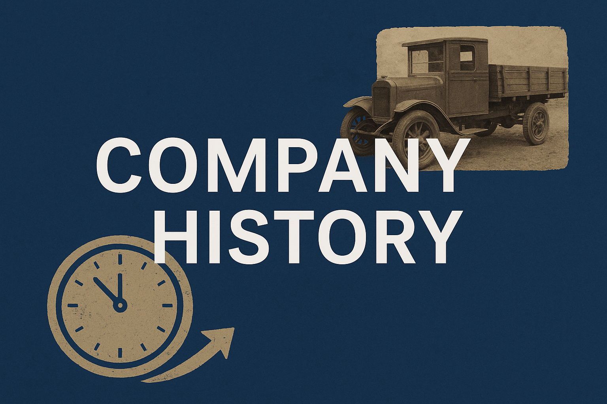
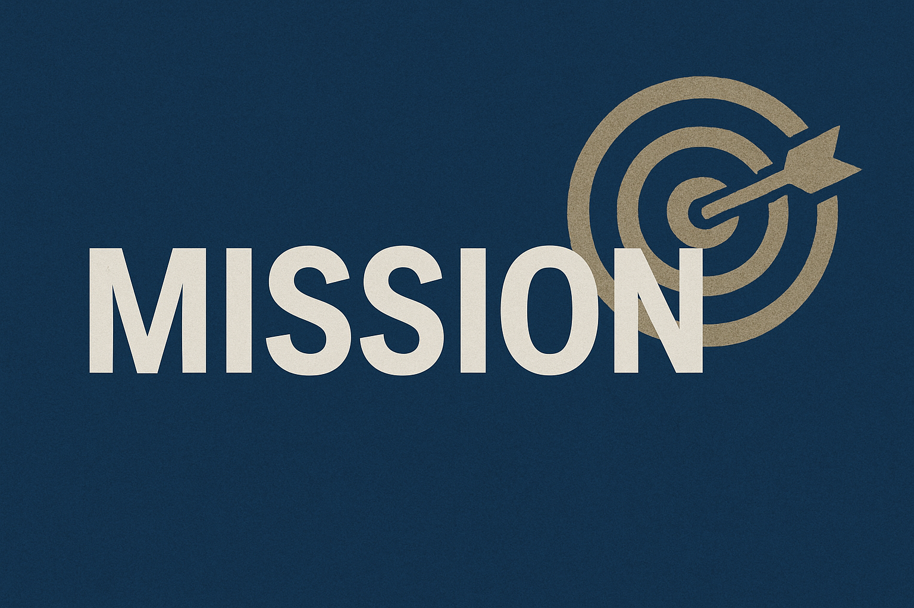
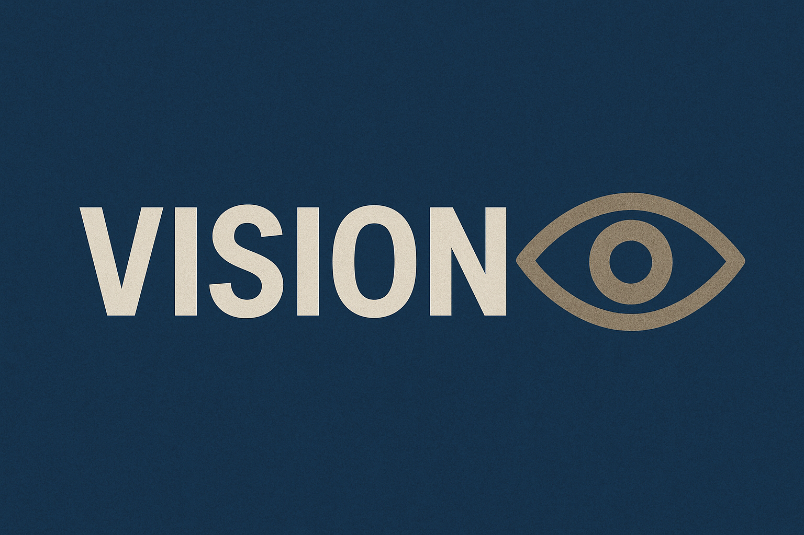
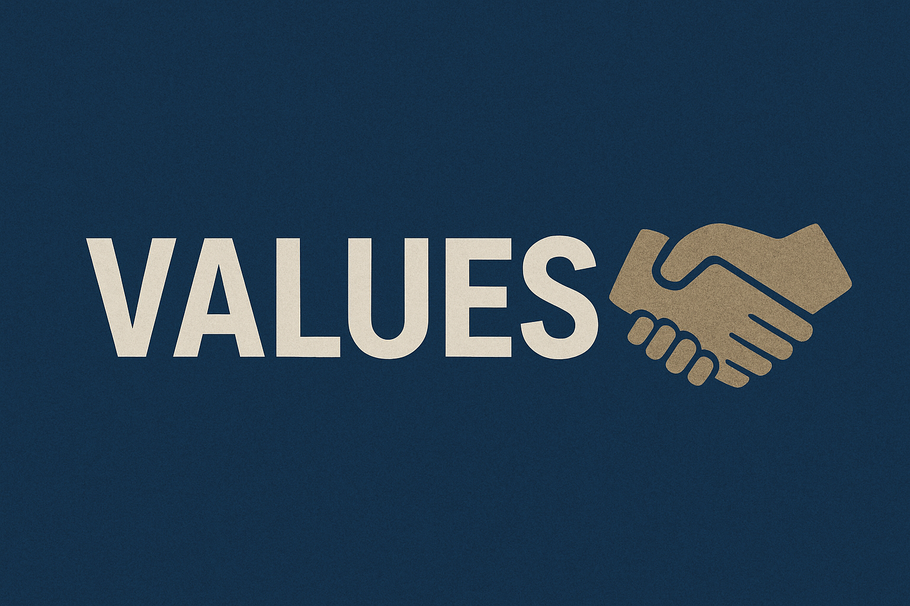

ABOUT US
Who we are
MacDylan Holdings is a proudly South African logistics company built on integrity, safety, and reliability. We serve organisations that need a dependable partner to keep products flowing — from farm gates and warehouses to stores and customers.
Company history
A group of transportation experts recognized the increasing demand for dependable, effective, and customer-focused logistics services in Southern Africa and founded MacDylan Holdings in 2021. The business swiftly established a reputation for on-time delivery, open communication, and affordable prices despite beginning with just one truck and a few contracts.
Mission
To deliver goods safely, on time, and with unmatched reliability, building long-term partnerships through exceptional service and trust.
Vission
To become a leading logistics partner in Southern Africa, recognized for innovation, integrity, and customer-focused solutions.
Values
- Reliability –Every delivery is a promise kept.
- Integrity – Honest, transparent, and fair in all business dealings
- Customer Focus – Understanding and meeting the unique needs of each client.
- Safety – Protecting people, goods, and the environment at every stage.
- Innovation – Using technology and smart solutions to improve efficiency and service.
Who we serve
SMEs in retail and manufacturing, farms and agri-co-ops, e-commerce sellers, NGOs, and construction/mining suppliers who need dependable transport and clear updates.